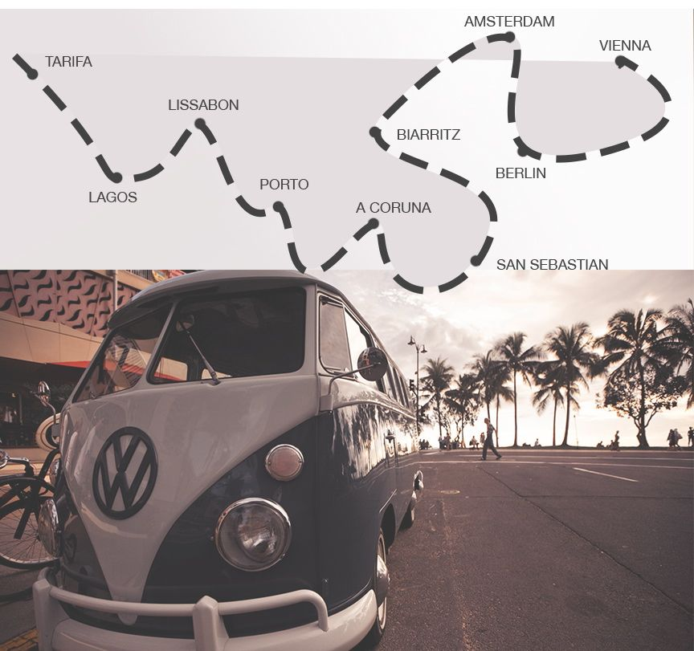
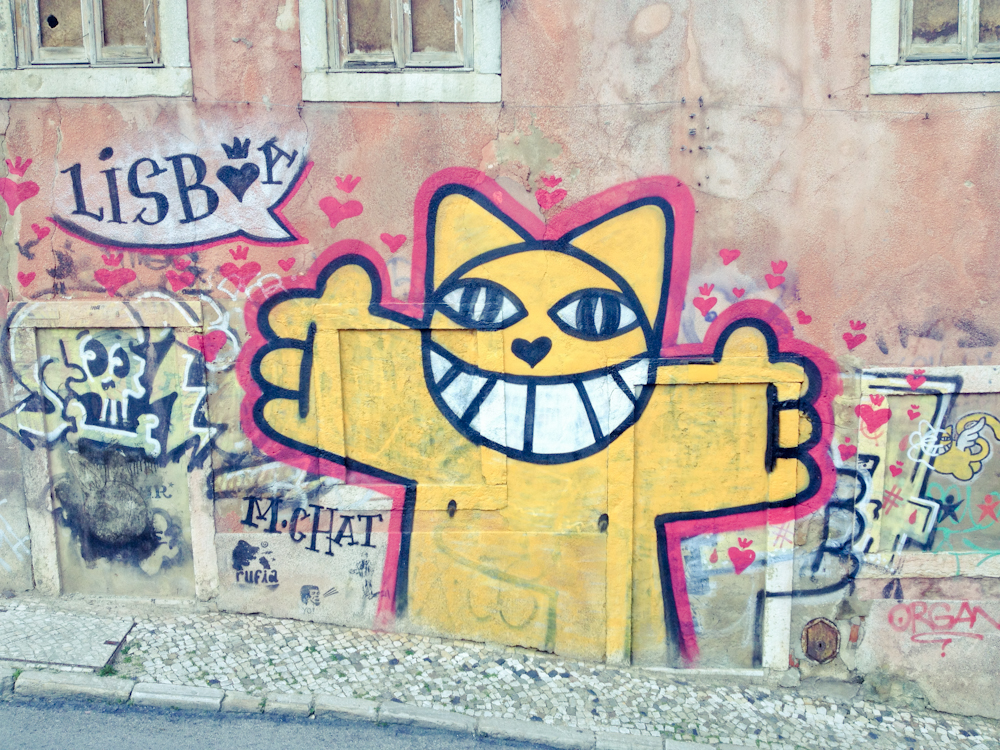
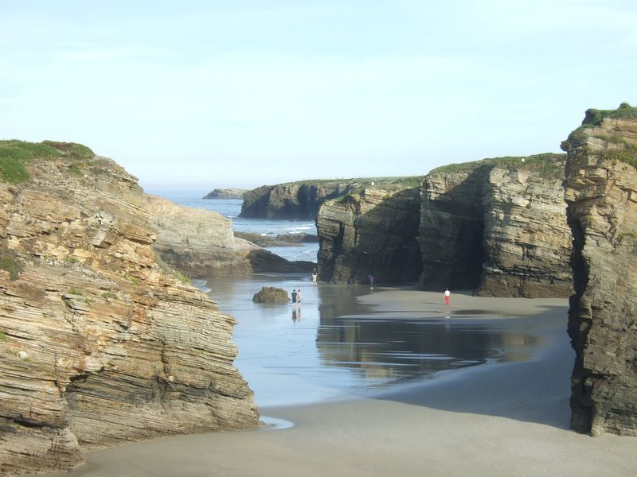
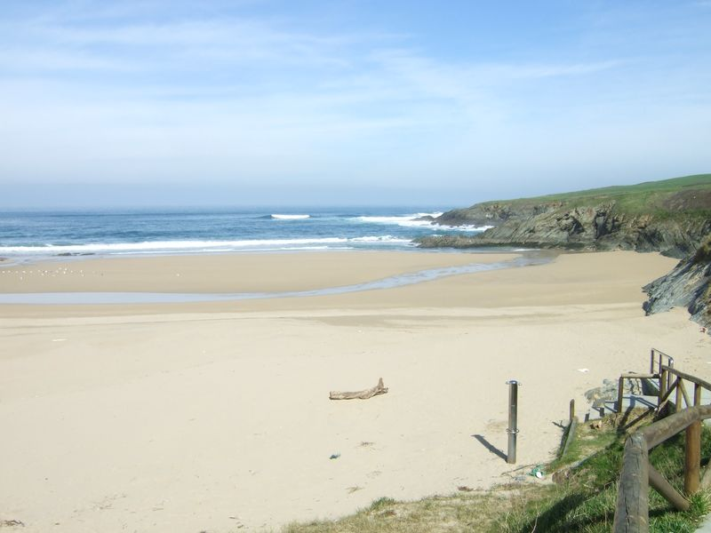
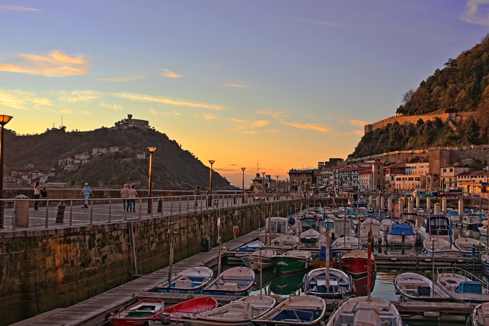
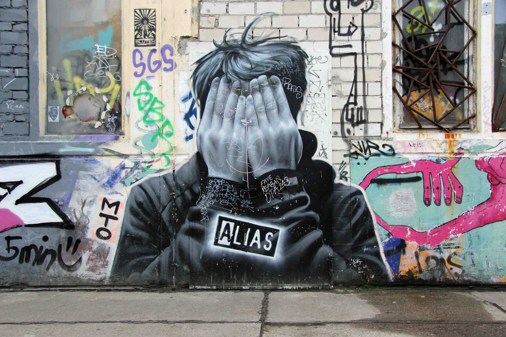

Project Bus
Wir, ein Hippi-Bus und eine kleine Happiness-Reise über die iberische Halbinsel. Start Sommer 2013. Klick links auf die Karte und finde selbst heraus was wir alles erlebt haben.
29.08.2013 14.35
Tarifa
Nachdem uns die Rucksäcke aus dem bus gestohlen sind und wir Unmengen an Grant hinunter geschluckt haben, dachten wir uns niemand kann uns diesen urlaub versauen und ab aufs Meer mit den Kites. Materielles hin und her, wir sind hier um Momente zu sammeln. Alsoooooo auf auf.
27.08.2013 14.35
Lagos
Und zurück in Bibione oder so. Wir haben gedacht wir sind hier in portugal aber anscheinend sind wir doch nur 5 Stunden gefahren und auf nahgelegenen Strand direkt neben Bibione in Italien aufgewacht. Die Muttersprache ist hier deutsch und auch sonst erinnert uns nichts mehr an das gemütliche und einfache portugisiesche Leben. Aber gut ein Cocktail muss sein. Sind wir halt nochmals 18 und genießen ein kleines Maturareise-Revival.


23.08.2013 14.35
Lissabon
Nach Porto jetzt das. Ich glaub ich schnapp mir einen Portugiesen, denn ich will hier nie wieder weg. Jede Straße so exquisit und eigen für sich. Irgendwie hat man das Gefühl dass hier Geschichten erzählt werden. Soviel Makel, soviel Schönheit zugleich...das ist Liebe.
18.08.2013 14.35
Porto
Nach fast 3 Wochen Surfen kommen wir langsam wieder in die Zivilisation zurück. So billig und gleichzeitig so schön war bis jetzt noch nichts. Wir genießen einen Cafè um satte 50cent und denken uns wir wollen hier nie wieder weg. Viva la Porto...oder wie heißt das nochmals auf Portugiesisch.
12.08.2013 10.42
A Coruna
Ein stilles Eck mit mächtigen Wellen. Unsere Surfskills verbessern sich täglich und trotzdem sind wir diesen Monstern manchmal ziemlich ausgeliefert. Aber wir geben nicht auf und machen eine Profession daraus. Und die chilligen Parties am Abend in irgendeiner nahgelegenen Bucht heizen das Urlaubsfeeling so richtig auf.


05.08.2013 09.15
San Sebastian
Biarritz nur 10mal freundlicher. Aber so eine saubere Stadt hab ich noch nie gesehen. Obwohl die Basken für ihre Reinheit und Wohlhaben bekannt sind, hat es uns überrascht. Trotzdem können sie hier leider keine Burger machen. Das sollten sie wohl den Amerikanern überlassen und lieber fleißig Paella auf ihren Dachterrassen zubereiten.

30.07.2013 22.35
Biarritz
Und jetzt geht es los mit dem Surfen. Die Leute werden immer kälter hier in Frankreich. Aber die Wellen sind ein Traum und der Mix aus Kite-, Wind- und Wellenreitern ist unglaublich groß. Wir freuen uns aber jetzt schon auf die temperamentvollen Spanier.
23.07.2013 16.31
Amsterdam
Ein Chiller-Paradies so oder so. Aber bis jetzt hat diese Stadt in ihrer ganzen Farbenpracht noch nie so gestrahlt. Wir wissen gar nicht wohin mit den blicken bzw mit unseren Füßen. Aber wie es hier halt so ist, hupft man von Coffeshop zu Coffeshop und kann s kaum fassen dass es noch mehr Sorten gibt.

17.07.2013 14.35
Berlin
Hippiger geht es kaum. Unfassbar wieviel minimalismus dieses hipster-Mekka aufweist. Wir fahren durch die Straßen und staunen nur. Soviel Graffiti. Soviele Leute aus einer anderen zeit. und wir dachten Wien ist schon hart infiziert. Aber wir trinken einen Cafè auf dem Plätzle Murks und genießen die Sonnenstrahlen, die irgendwie so gar nicht hier her passen. 'es stirbt ein stück von berlin'-Ohrwurm Olè.
14.07.2013 07.13
Vienna
Die ersten 4km haben wir schon hinter uns gebracht. unsere Augen sind noch müde aber freuen sich auf viele unzählige Eindrücke in den nächsten 6 Wochen. Neue leute. Massenhaft Kultur. Unzählige gestandene Wellen. Und natürlich ganz viel Happiness.
Baba Wien ...wir kommen wieder
About us
An unserer heutigen Welt, ist man viel zu oft gestresst, überfordert oder neidisch und vergisst das Schöne und Gute, welches sich direkt vor den eigenen Augen abspielt. Und wir freuen uns wenn ihr uns helft diese Art von Messages zu verbreiten. Sei es hin und wieder eine gute Tat oder dass ihr eure Familie und Freunde packt und einfach das Leben genießt.